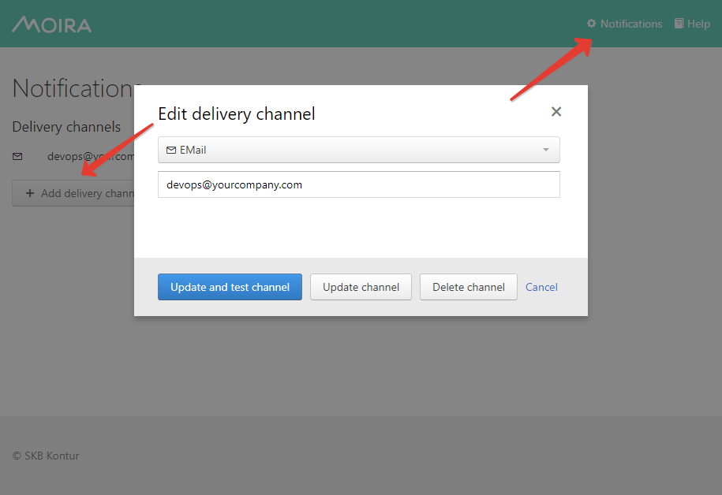

Setting Up Your Subscriptions¶
By now you should have at least one trigger saved. If you don’t, go back to the Simple Threshold Trigger page.
First, add some delivery channels:
{kind=link}
If your Moira installation is configured with separate user accounts, you will see only your channels and subscriptions on this page. Otherwise, every user will see the same page with the same channels and subscriptions.
Consult Security page for instructions on separating user accounts.
Once you have at least one channel, you can create a subscription.
Press + Add subscription button:
{kind=link}
Plotting¶
According to two existing polling approaches:
Local triggers are best to analyze realtime metrics
Remote triggers allows to use wider time windows to fetch historical data directly from Graphite
there is also two different time ranges will be used according to trigger type:
Notification based on events generated by local trigger will contain graph with timeseries for the last 30 minuntes wheter is throttled or it was scheduled earlier because of subscription’s own time limits.
Notification based on events generated by remote trigger will contain graph with timeseries for not less than 30 minuntes until last event occured. Otherwise first and last events times will form the window.
{kind=link}
Tags¶
Add required tags into subscription to receive notifications from triggers with these tags.
Matching rule is: Notification will be sent if trigger contains ALL of selected tags.
For example:
If subscription has only one tag, you will receive notifications from any trigger with this tag.
Create Triggger1 with tags:
["DevOps", "Moira-duty"]Create Triggger2 with tags:
["DevOps"]Create Subscription1 with tags:
["DevOps"]By using Subscription1 you will receive events for both Triggger1 and Triggger2
If subscription has multiple tags, you will receive notifications only from triggers which include all these tags.
Create Subscription2 with tags:
["DevOps", "Moira-duty"]By using Subscription2 you will receive events only for Trigger1
Ignore Specific States Transitions¶
You also can reduce number of notifications ignoring unnecessary event. For this purpose use following check boxes:
Send notifications when triggers degraded only
Only following states transitions will require notifications:
OK→WARNOK→ERROROK→NODATAWARN→ERRORWARN→NODATAERROR→NODATA
Do not send WARN notifications
Following states transitions will be ignored:
OK→WARNWARN→OK
Create and Test¶
You can just save your subscription, but if you want to be 100% sure it works, you should immediately test it. Dummy notification message will arrive shortly.